An autonomous rover engineered to detect, contain, and eliminate invasive Spotted Lanternflies — with a Phase 2 AI vision pipeline built for ecological intelligence at scale.
The Spotted Lanternfly is not a nuisance — it is an ecological and economic emergency. Without autonomous, scalable intervention, its spread is a matter of when, not if.
Projected annual damage to Pennsylvania's agriculture sector alone. Threatens viticulture, fruit, timber, and nursery industries across the Mid-Atlantic.
Direct employment threatened in agriculture and related industries in Pennsylvania if SLF populations go uncontrolled.
The Loyola Maryland campus is a Level II accredited arboretum. Home to 114 varieties of trees — all under growing threat from SLF infestation.
Manual traps, chemical sprayers, and biological controls generate no intelligence. Every capture is a dead end. ARNOLD changes that.
A fully functional autonomous rover integrating CAD-designed hardware, embedded systems control, and passive biological trapping into a single deployable unit.
Laser-cut transparent enclosure designed to admit SLF while preventing escape. Transparency sustains the milkweed plant inside through photosynthesis.
3D-printed directional vents scented with peppermint oil — a known SLF attractant. Engineered to allow entry and prevent escape through directionality.
Live milkweed plant housed inside the trap. Cardiac glycosides in milkweed are selectively lethal to SLF — preserving non-target species.
Servo motor actuates a custom-designed probe on a scheduled cycle during the rover's final autonomous lap. Iterated through multiple probe configurations.
Manages autonomous path navigation, remote operation via camera feed, obstacle avoidance via quad motion sensors, and spray scheduling.
Rechargeable 12V, 5.16Ah battery powering all subsystems — rover drive, Raspberry Pi, and spray actuation — for 4 continuous hours of autonomous operation.
CAD models, assembly photography, and field validation footage — adding soon.
The prototype proves the hardware. The pipeline proves the mission. ARNOLD's next evolution transforms every capture event into ecological intelligence.
Phase 1 hardware has been built and field-validated. Phase 2 and Phase 3 represent the proposed engineering roadmap.
Functional prototype built, field-tested, and validated at Loyola Maryland Arboretum. Autonomous movement, trap containment, and spray actuation confirmed.
Camera-based species identification using trained CNN classifier. Real-time SLF vs. non-target differentiation. Object detection with frame-by-frame population counting.
GPS-tagged population heatmapping. Temporal trend analysis. Research-grade data export for entomology and agricultural science applications.
Current pest control generates no intelligence. ARNOLD Phase 2 transforms every capture into a data point — answering where populations are highest, when they peak seasonally, which non-target species coexist, and how populations respond to intervention over time. This data infrastructure is replicable across vineyards, state parks, and agricultural research stations.
ARNOLD was not handed a scope. It was built from first principles — authored, designed, led, and field-validated by a team of four engineers under one systems architect.
Authored the original MRAF Design Proposal — defining project scope, team skill matrix, power calculations, control architecture, fabrication procedures, and societal impact framework from first principles.
Owned the integration layer: ensuring CAD designs were compatible with 3D print constraints, power calculations supported all subsystems simultaneously, and control modes did not conflict at the firmware level.
Managed a 4-person cross-disciplinary team across design, fabrication, programming, and wiring — distributing labor by skill while ensuring cross-functional exposure throughout the development lifecycle.
The sprayer actuator probe went through multiple design iterations before achieving reliable servo attachment. Vent design was restructured mid-build when 3D print constraints made full-length vents impossible.
MRAF Proposal authored and submitted — full scope, power budget, team matrix, and fabrication procedure defined
CAD design finalized across all custom components — bug trap, vent ducts, sprayer probe, plant holder
Hardware assembly, wiring, and embedded control programming completed
Integration testing — sprayer probe iterated through multiple configurations until reliable actuation achieved
Field testing at Loyola Maryland Arboretum — path following, obstacle avoidance, and SLF attraction validated end-to-end
Final poster and live demonstration delivered — project closed with full documentation
Computer & Electrical Design Engineer · Loyola University Maryland, Class of 2025
The full design proposal and final presentation poster from the ARNOLD project — authored, presented, and field-validated through the Loyola MRAF Junior Design Program.
Presentation poster summarizing the system architecture, hardware components, field validation results, and Phase 2 vision pipeline roadmap. Delivered February 2025.
Full project proposal defining scope, power budget, team skill matrix, fabrication procedures, control architecture, and societal impact framework — authored from first principles. Submitted September 2024.